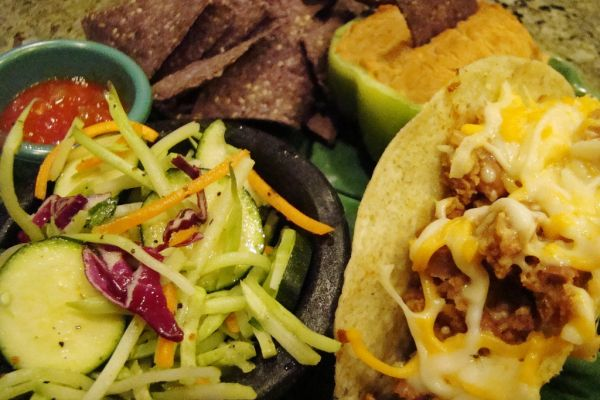

Cole Slaw

Photo: Vegan Feast Catering (CC BY 2.0)
A make-ahead coleslaw of shredded cabbage and chopped green or red pepper in a cooked sweet-and-sour dressing of sugar, vinegar, oil, and celery seed.
Directions
- Mix first 4 ingredients. Bring to a boil for 2 minutes. Cool
- Mix all together and refrigerate overnite. Will keep for 10 days.
- Mix the first 4 ingredients (sugar, vinegar, oil, and salt). Bring to a boil for 2 minutes, then let cool.
- Mix everything together: the cooled dressing with the cabbage, celery seed, and chopped green or red pepper. Refrigerate overnight. It will keep for 10 days.
Goes well with
https://lizotte.cool/recipe/cole-slaw.html